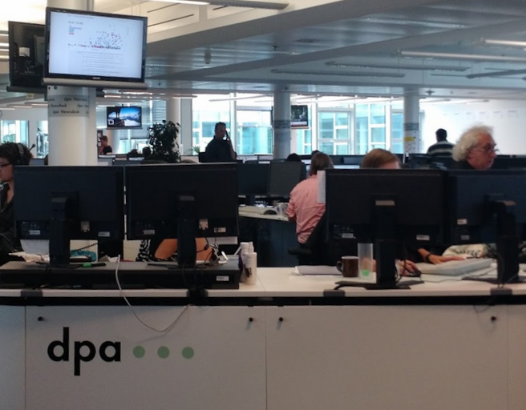
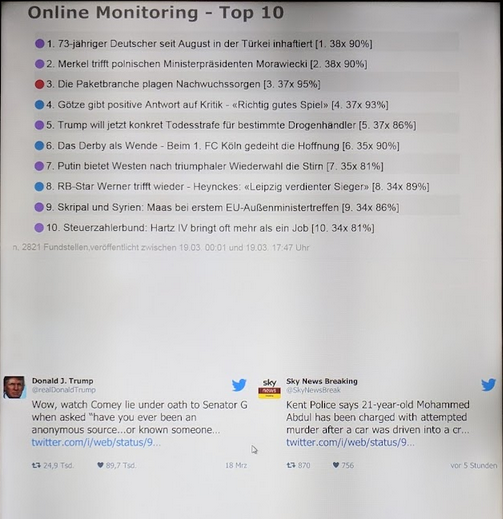
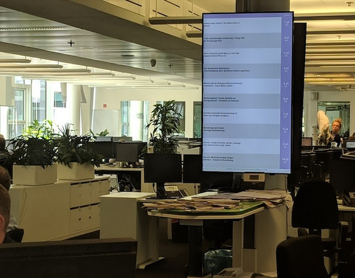

To reopen this modal, please click on the after the title.
This graph shows how customers pick up stories provided to them by the wire service they trust, offered by dpa Deutsche Presseagentur. Each dot in the scatterplot represents a wire story, the higher it flies, the more customers have picked it up. The farther to the right it is located, the fewer changes these customers have made to the text of the story.
Technical Details Data for this chart came from a massive news web crawl by Neofonie GmbH, who also provided the data processing capabilites. Sentences written by dpa staff are identified within the news stories published by customers. The percentage of matching sentences for a particular story on a particulat website gives the score (scatterplot x axis).
Data points and links to the stories have been pseudonymized to protect the relationship between dpa and their customers.
The chart also makes extensive use of the features of Vega, a phantastic tool for interactive data visualizations. As you see, the browser can support aggregating around 4000 data points on the fly, still being able to display every data point if you want to dive into the details.
Features of the Chart
The story of this chart
The chart was made during the Newsstream 2.0 project, thanks to financing by the Federal Ministry of Education and Research. For some time, it was displayed on a large screen in the dpa newsroom in Berlin and used by dpa editors on their desktop PCs as a guidance as to how their stories performed with customers.
In dpa jargon, this visualization was called Bällebad, as the scatterplot evoked a cloud of colorful balls thrown into the air.
Then, as always happens, a better tool came along ;-)
July 2016 big screen version, in the top left corner.
March 2018 big screen version, detail view
September 2018 big screen version